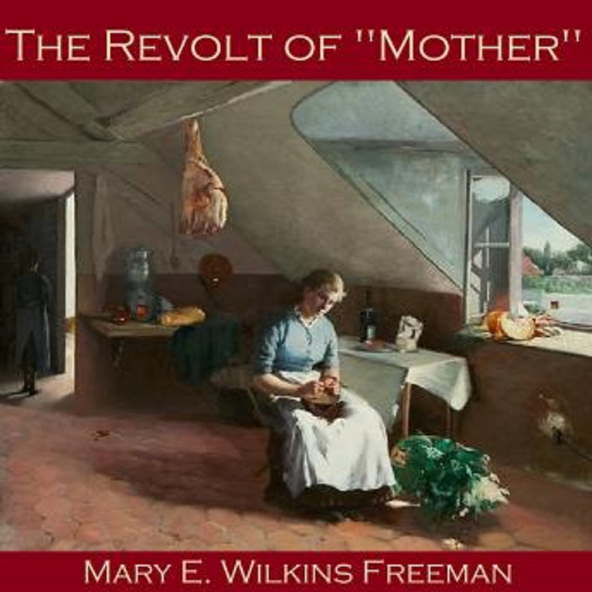

Plot/Theme | ||
| links: | ||
|
Author Characters Sources |

PlotDuring "The Revolt of Mother," Sarah Penn, the main protagonist has wanted a new house since she got married to Adoniram. He had promised her a new house and she stuck him to it. After 40 years, there still was no sign for a new house until one day she saw men digging in the nearby field. With her suspicion she investigated what was going on, and to her surprise her husband was trying to avoid telling her. Turns out, Adoniram Penn was planning on digging for a new barn in the very spot he promised Sarah their new house would be built; an even larger barn then the one they already have according to their son Sam.Upset by this comment, Sarah realizes how her home right now is much smaller than the barn that already stands on the property. Meanwhile, Sarah and Adoniram's daughter daughter Nanny is engaged and is seeking an alternate place to get married because their house right now is too small to entertain guests. Sarah after talking with Nanny goes to remind Adoniram that when they were married, forty years earlier, he promised her a fine new house on the very site where the new barn is under construction. She then goes to say Nanny wishes for a parlor for the upcoming wedding. Like most men, Adoniram refuses to be wrong so dismisses her and wishes to avoid the topic going much farther. Adoniram then went out for three or four days to go purchase a new hore. When men deliver a load of hay ordered for the new barn, Sarah told them to put it in the old barn instead. Afterwards, her and her children pack up their belongings, Sarah loads the contents of the kitchen into a basket. Then the mother moves of all the furniture, the stove, and their belongings of the house, across the field, and into the new barn. To make the stalls seem like bedrooms, Sarah hugh quilts in front of the box stalls, and the harness room, with the chimney and shelves, becomes “the kitchen of her dreams.” While this is all happening, neighbors speculate that Sarah Penn is either mad or being rebellious. The minister even visits to check on her sanity. On the day that Adoniram comes home, most of the townspeople gather on the road to witness what is about to happen. The husband first goes to the house, then the shed (which now is where one of the new cows stays because that the old barn cannot accomodate). Then, Adoriam leads the horse to the new barn. And to his surprise, his family is inside waiting. Sarah says they have come to live in the new barn, and continues to say he must put in some windows and partitions and buy some new furniture. With Adoniram not speeking, their son Sam leads the new horse to the old barn. After dinner, Sarah finds her husband crying, and tells her that he had no idea she was so set on a new house ThemeOne clear theme is gender role. Women back in the day were "supposed" to be in the kitchen cooking food, and cleaning around the house. Most of the time, to little of the time they were have a say in anything. Meanwhile, men would do as they pleased. So Sarah was teaching her daughter Nanny these roles by sewing and when she asked why she doesn't push for the new house Sarah explains to her how it is incomprehensible for men. That they have the ultimate say so when he decided a new barn was going to be built there it would be. But then, Sarah justified why she needed a house versus why they would need a new barn, and went against her husband behind his back, and turned the new barn into a house. Back in these days that is reversal of gender roles, since after Adoniram got back from purchasing a new horse she explained to him how they are not moving out of the new barn/their new home. Likewise, religion is another theme throughout this short story. Sarah's deep religious nature is the driving force for her to move their belongings into the new barn. Providence is God’s way of guiding Christians, and Sarah can profit from these circumstances. She must be ready to see signs of what the Lord expects of her and be ready to do His will. The letter that removed Adoniram from the house to get the horse can been seen ” as a sign from God that means for her to follow. She uses her belief to explain to Minister Hersey, that she made her radical decision with the help of prayer, and that household concerns are strictly between her, the Lord, and her husband. Ironically, he is unable to understand her spirituality, and he is the man who is supposed to be God’s representative on Earth. |
|
| UMaine undergrad Student-American Short Story Project | ||